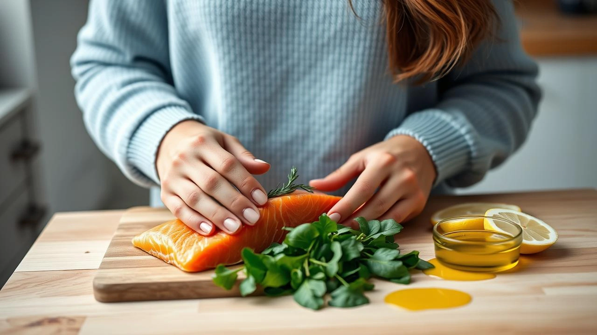

Best foods for focus and concentration is a search phrase, not a reliable ranking of cognitive effects. A food that fits an ordinary meal does not automatically improve attention.
Specific nutrients and attractive food lists can make a claim sound precise. Ask whether there is evidence for the outcome being promised, not only a plausible explanation.
This guide offers five questions about a food claim and your practical needs. It does not prescribe supplements, exclusions or a diet for attention difficulties.
Best foods for focus and concentration cannot be ranked universally here. Examine the claimed outcome, comparison, overall eating pattern, suitability and access without treating one ingredient as a concentration treatment.
What is a food-related concentration claim?

A concentration claim links eating a food with an attention outcome. Ask what was measured rather than assuming that a nutrient description demonstrates a benefit.
- Identify the attention outcome.
- Ask what was measured.
What are the signs that a ranking is unsupported?
A ranking is unsupported when it gives precise boosts or treats an ingredient as essential without appropriate evidence. Check the source and comparison before changing what you eat.
- Question precise boost percentages.
- Avoid treating a food as essential for thinking.
Why does a balanced diet not establish a single-food focus effect?
The NHS Eatwell Guide addresses balance across the overall diet. That guidance does not rank particular foods as cognitive treatments, so distinguish ordinary nutrition advice from a focus claim.
- Overall eating patterns matter.
- A nutrition guideline is not a cognitive trial.
How can five questions examine the recommendation?
Check the claim before adding a new food rule. Individual allergies, dietary needs and professional advice remain relevant.
- 1. Claim. What specific effect on focus is promised?
- 2. Comparison. What was compared, and in whom?
- 3. Pattern. Does the advice consider the overall diet rather than one ingredient?
- 4. Suitability. Does it fit allergies, dietary requirements and relevant health advice?
- 5. Access. Is it affordable, available and practical, or would a suitable ordinary alternative work?
How can you manage meal access and attention concerns daily?
Arrange appropriate meal access where possible and discuss continuing concentration concerns with a suitable professional. Do not assume that buying an advertised ingredient replaces assessment.
- Address practical meal barriers.
- Seek suitable advice for ongoing symptoms.
Food claim review: Claimed effect ____. Evidence comparison ____. Overall pattern ____. Dietary requirement ____. Practical alternative ____.
For a related next step, consider addressing an ordinary care obstacle, preparing concentration questions for care, checking a suitable snack option.
An Illustrative Scenario
Fictional example: A student sees an expensive food described as essential for exam focus. They check the evidence and choose an affordable meal that fits their needs instead. Start with the claim rather than a shopping obligation.
The meal does not demonstrate improved concentration or grades. This example illustrates a practical food decision, not a treatment result. Seek support for ongoing attention concerns.
Frequently Asked Questions
Choose One Small Next Step
You can make an ordinary food choice without a cognitive promise.
A claim should earn scrutiny before it becomes a rule.
Check one recommendation against its evidence and your needs today.
Sources and Scope
NHS supplies overall dietary-balance guidance. It does not validate a ranking of foods for concentration; the questions are editorial claim-reading aids.
Written by the NicheHubPro Editorial Team. Read our editorial policy.
This article is for informational purposes only and does not replace professional medical advice.